기능을 더할수록 왜 더 느려질까요
에이전트에게 원하는 걸 말하면 프런트엔드, 백엔드, 데이터베이스까지 금방 만들어 줘요. 처음엔 기분이 좋아요. 그런데 자세히 보면 원했던 기능 몇 개가 빠져 있고, 요청하지 않은 기능이 붙어 있어요.

고치려고 다시 프롬프트를 넣으면 한 곳을 고칠 때 다른 곳이 조용히 깨져요. 몇 번 반복하면 원래 뭘 만들려 했는지도 흐려지고, 다시 설명하고 다시 고치는 동안 시간과 토큰만 나가요.
어찌어찌 배포해도 다음 기능에서 문제가 이어져요. AI는 이미 있는 컴포넌트를 쓰지 않고, 같은 로직을 세 번째로 새로 짜요. 앱은 느려지고 코드는 지저분해지고, 새 기능이 잘 돌던 옛 기능을 깨기도 해요.

발표자는 원인을 세 가지로 짚어요. 에이전트가 기억하는 계획이 없고, 결정을 남긴 기록이 없고, 이미 있는 걸 재사용하게 하는 장치가 없어요. 그래서 이건 더 좋은 프롬프트로 고칠 문제가 아니라 엔지니어링 문제라고 말해요.
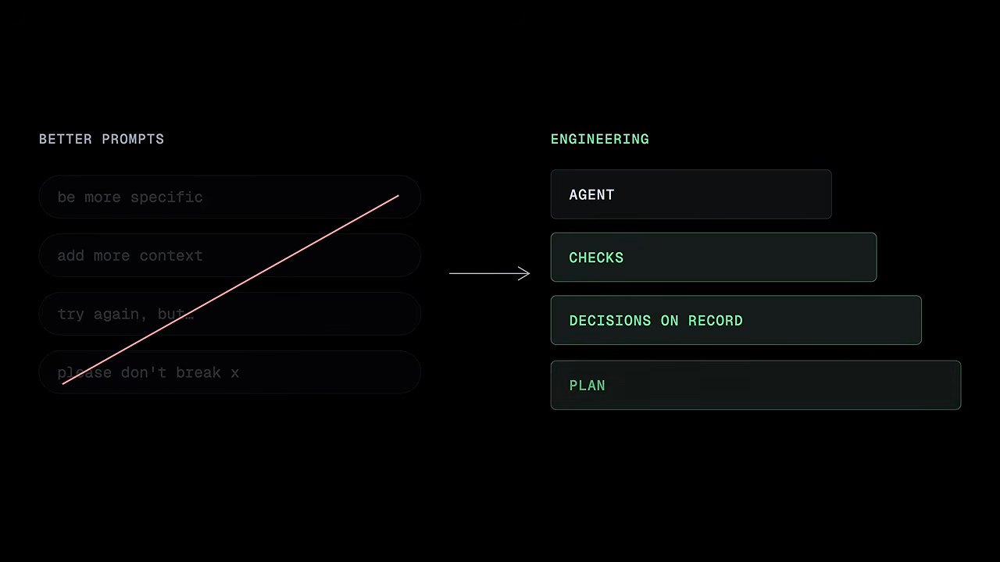
이후 영상은 이 문제를 단계별 스킬로 하나씩 풀어 가요. 새 프로젝트뿐 아니라 남이 짠 오래된 코드베이스에서도 같은 흐름을 돌려 보여 줘요.
scope — 코드보다 계획이 먼저예요
앞에서 본 헛돌기는 대부분 한 가지에서 와요. AI에게 계획이 아니라 '소원'을 줬다는 거예요. "사용자용 대시보드 멋지게 만들어 줘" 같은 말은 1버전 범위도, 빠질 것도, 순서도, 완료 기준도 없어요.

소프트웨어 팀은 수십 년 전부터 이걸 해 왔어요. 코드보다 요구사항이 먼저예요. 이유는 단순해요. 계획의 한 줄을 바꾸는 건 공짜지만, 코드 전체에 퍼진 결정을 바꾸는 건 재작성이에요. AI로 만들기 시작하면서 우리는 이 단계를 슬쩍 건너뛰었어요.
scope 스킬이 하는 일
scope는 그 단계를 되돌려 놔요. 아이디어를 주면 바로 코드를 짜지 않고, 시니어 엔지니어처럼 먼저 인터뷰를 해요. 누구를 위한 건지, 1버전에 뭐가 들어가고 뭐가 미뤄지는지, 무엇이 무엇에 의존하는지 물어요.
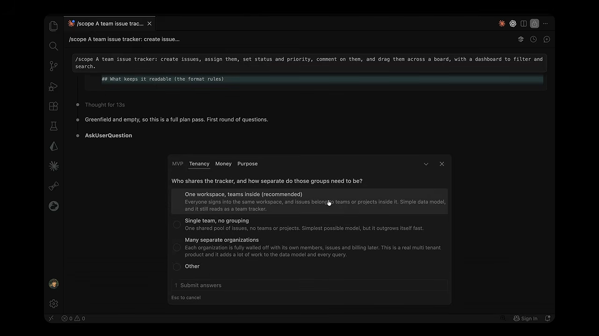
그다음 빌드를 어떤 모양으로 할지 추천해요. 전체 시스템을 관통하는 얇은 조각부터 증명할지, 가장 작은 쓸 만한 버전부터 낼지, 사용자 여정 하나를 끝까지 완성할지예요. 데모 화면에서는 네 가지 방식을 비교해요.
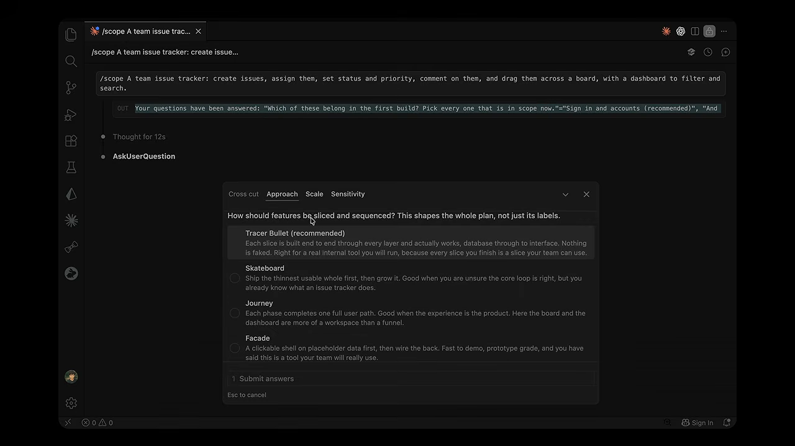
| 방식 | 화면 속 설명 |
|---|---|
| Tracer Bullet (추천) | 조각마다 DB부터 화면까지 끝까지 실제로 동작하게 만들어요. 가짜가 없어요. |
| Skateboard | 가장 얇은 '쓸 수 있는 전체'를 먼저 내고 키워요. 핵심 흐름이 맞는지 확신이 없을 때 좋아요. |
| Journey | 단계마다 사용자 경로 하나를 완성해요. 경험 자체가 제품일 때 맞아요. |
| Facade | 가짜 데이터로 클릭되는 껍데기부터 만들고 뒤를 연결해요. 데모는 빠르지만 프로토타입 수준이에요. |
scope는 일부러 기술 스택을 건드리지 않아요. 데이터베이스, 프레임워크, 라이브러리는 정하지 않고 무엇을 만들지만 정해요. 어떻게 만들지는 바로 다음에 별도의 결정으로 내려요. 그래서 도구를 바꾸는 날에도 계획이 낡지 않아요.

architect와 develop — 결정은 의도적으로
계획이 있어도 설계는 아니에요. 데이터베이스를 어떻게 짤지, 어떤 스택을 고를지, 핵심 로직을 어떻게 다룰지 정해야 해요. 첫날부터 사용자가 수백만 명은 아니지만, 그때까지 갈 수 있게 지으면서도 아직 없는 규모를 위해 과하게 짓지 않는 균형이 필요해요.
문제는 AI가 이 결정을 대신 내려 버린다는 점이에요. 기능마다 정하지 않은 결정이 숨어 있어요. 데이터를 어떻게 저장할지, 실패하면 어떻게 할지, 목록에 페이지네이션이 있는지, 어느 제공업체를 쓸지예요. AI는 묻지 않고 돌아가게 하는 쪽을 골라 코드에 묻어 둬요. 결국 사람은 결정하는 게 아니라 결정을 물려받고, 그 결정이 깨질 때의 문제까지 물려받아요.
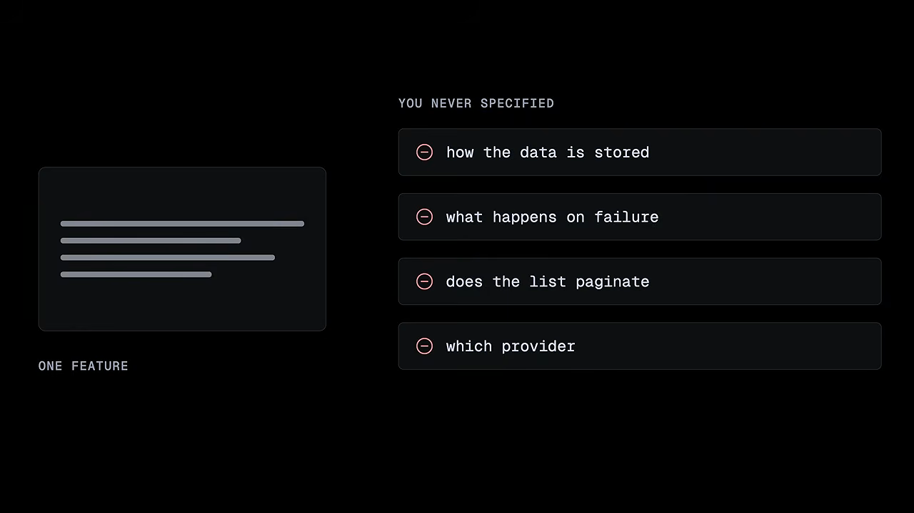
architect — 결정을 표에 올려요
architect 스킬은 코드보다 먼저, 시니어 엔지니어가 할 설계 대화를 진행해요. 먼저 패턴부터 생각해요. 정말 복잡해야 하는지, 지루하지만 믿을 만한 선택이 맞는지 따져요. 그리고 좋은 엔지니어라면 이미 갖고 있을 기본 입장으로 시작해요.
| 영역 | architect의 기본 입장 |
|---|---|
| 구조 | 모놀리스로 시작해요 |
| 데이터베이스 | 기본은 관계형 DB예요 |
| 목록 | 모든 목록에 페이지네이션을 넣어요 |
| 공개 엔드포인트 | 모두 rate limit을 걸어요 |
| 비밀값 | 코드에 절대 두지 않아요 |
결정마다 추천안과 정직한 대안, 그리고 그 대안이 떨어진 실제 이유를 함께 올려요. 이 내용은 코드에 묻히지 않고 문서로 남아서, 사람이 보고 뒤집을 수 있어요.
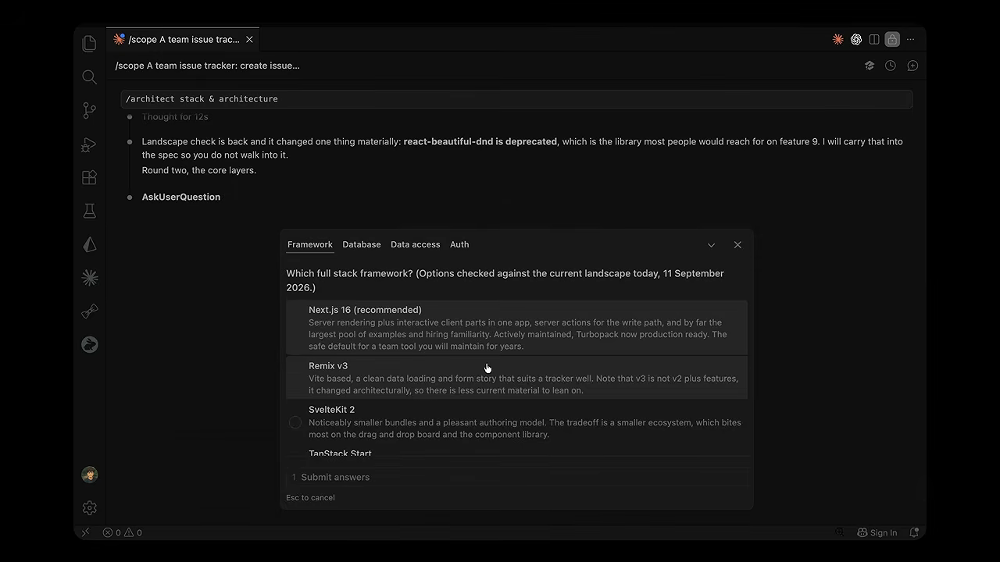
밑바닥에는 구체적인 안전장치가 하나 더 있어요. 기능이 보여 주거나 계산해야 하는 모든 값(합계, 날짜, 상태)마다 그 값이 어디서 오는지 적게 해요. 출처가 없는 값은 아무도 내리지 않은 결정이에요. 이걸 설계 단계에서 잡아내면, 나중에 AI가 구현 도중 지어내는 일을 막을 수 있어요.
develop — 결정이 비어 있으면 멈춰요
막상 구현에 들어가면 develop 스킬이 예상 밖의 행동을 해요. 멈춰요. 계속 만들려면 아무도 정하지 않은 결정을 지어내야 했기 때문이에요.
발표자가 강조하는 건 이 판단을 '느낌'으로 하지 않는다는 점이에요. AI는 진짜 결정을 '그냥 연결 작업'이라고 스스로 납득하고 지나치기 쉬워요. 그래서 develop은 기계적으로 해요. 기능이 만들어야 할 값을 전부 나열하고, 계획에서 각 값의 출처를 찾아요. 출처가 없는 값이 있으면 거기서 멈추고 결정을 하러 돌려보내요.
물론 사람이 무시하고 그냥 만들게 할 수도 있어요. 대신 그 순간 가정이 파일에 기록되고, 제대로 결정될 때까지 그 기능에 표시가 붙어요. 지름길로 간 부분도 채팅에 묻히지 않고 파일에 보이게 남아요.
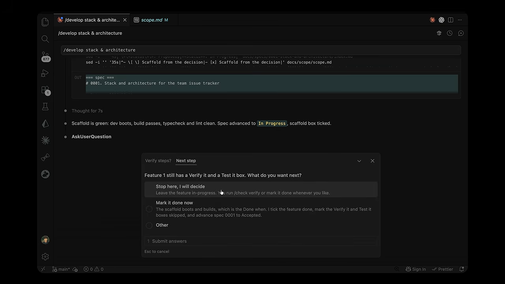
발표자는 이게 마법은 아니라고 솔직히 말해요. 어떤 프롬프트도 100%를 잡지는 못해요. 하지만 대부분을 잡고 나머지에 시니어의 판단을 보태는 것과, 전부를 조용히 정해 버리는 것은 완전히 다른 세계라고 해요.
audit와 sync — 프로젝트 지식을 파일에
에이전트를 쓰는 환경은 모두 컨텍스트 파일 위에서 돌아가요. AGENTS.md, CLAUDE.md처럼 도구마다 이름은 달라도, 프로젝트의 스택, 명령어, 규칙을 에이전트에게 알려 주는 파일이에요. 이게 없으면 새 세션은 매번 눈을 가린 채 추측하고, 추측도 매번 달라요. 그러다 코드베이스가 세 가지 스타일로 갈라져요.
잘 만드는 건 생각보다 손이 많이 가요. 앱이 모노레포나 여러 서비스로 나뉘면, 큰 파일 하나가 매 세션을 필요 없는 규칙으로 부풀려요. 맞는 맥락을 맞는 자리에, 가볍게 둬야 해요.
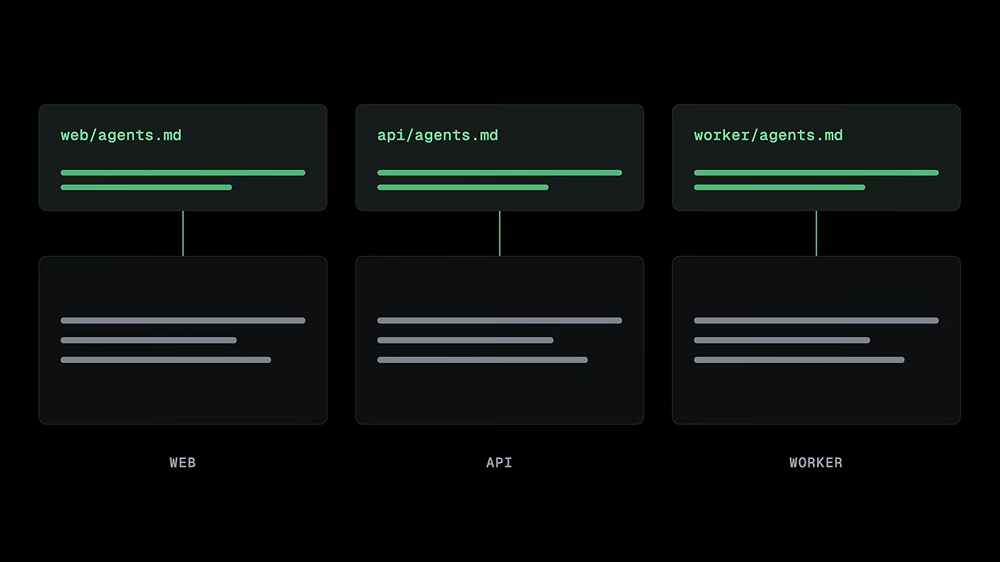
audit — 실제 프로젝트에서 맥락을 써요
audit 스킬은 실제 프로젝트의 구조와 스택, 그리고 architect가 이미 내린 결정을 읽고 컨텍스트 파일을 대신 써요. 'AI가 생각하는 이런 프로젝트'가 아니라 실제로 있는 것에서 출발해요. 단일 앱이면 AGENTS.md 하나, 모노레포면 모든 곳에 해당하는 내용만 담은 얇은 루트 파일과 각 부분 옆의 파일로 나눠요.
실제 팀 저장소에서도 안전하게 쓸 수 있어요. 사람이 쓴 내용은 절대 덮어쓰지 않고 빈 곳만 채워요. 코드가 문서의 주장과 어긋나면 마음대로 밀어 버리지 않고 충돌을 표시해서 사람에게 판단을 맡겨요.

sync — 몇 달 뒤에도 맞게 유지해요
계속 배포하다 보면 문서와 코드가 멀어져요. sync 스킬은 이 파일들을 저장소가 지금 보여 주는 상태에 맞춰 다시 맞춰 줘요. 그래서 석 달 뒤에 읽는 맥락도 지금 실제 앱을 설명해요.
이렇게 얻는 건 분명해요. 프로젝트 지식이 닫으면 사라지는 채팅이 아니라 파일에 살아요. 새 세션도, 팀원도, 완전히 다른 AI 도구도 그 파일만 읽으면 하던 데서 이어 갈 수 있어요.
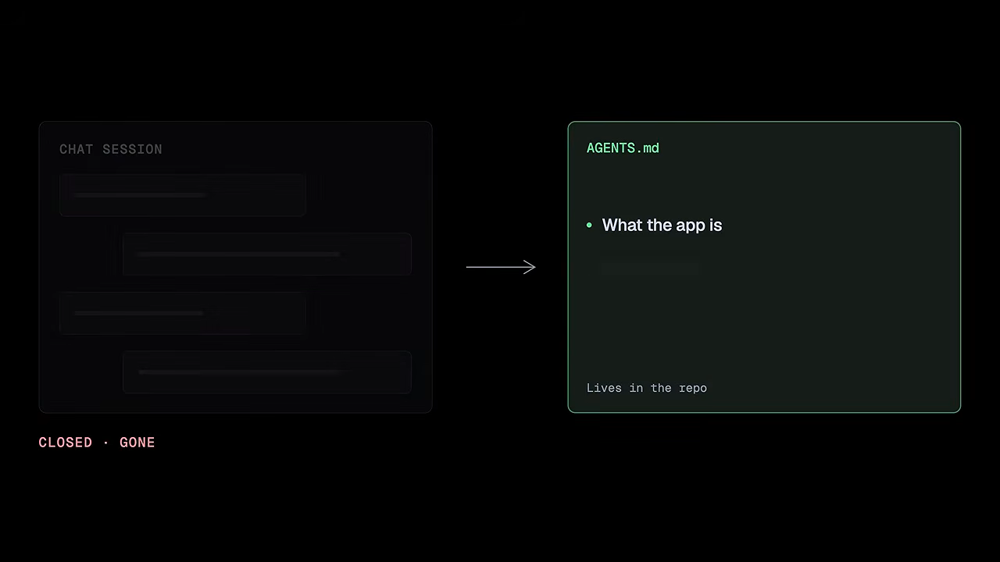
남이 짠 레거시 코드에서도 돌아갈까요
지금까지는 모두 깨끗한 새 프로젝트에서 시작했어요. 발표자는 여기서 솔직해져요. 자기 영상을 포함해 대부분의 AI 코딩 튜토리얼은 새 프로젝트로 만들어요. 싸울 게 없고 배우기 쉬우니까요. 하지만 평범한 화요일 저녁의 일은 그렇지 않아요.

실제 코드는 남이, 대개 몇 년 전에 짰어요. 문서는 없거나 낡았고, 규칙은 역으로 알아내야 하고, 튜토리얼에서 본 스택이 아닐 때도 많아요. 그래서 질문은 'AI가 이걸 읽을 수 있나'가 아니에요. 읽는 건 당연히 돼요. 질문은 '엔지니어링 워크플로 전체가 물려받은 엉망 위에서 돌아가나'예요.
audit가 한 번 더 쓸모 있어요
같은 audit 스킬을 기존 프로젝트에 겨누면, 새로 세팅하는 대신 실제 코드를 읽고 어떻게 돌아가는지 적어 줘요. 이게 남이 시작한 코드베이스에 워크플로 전체를 들여보내는 입구예요. 발표자는 자바스크립트가 하나도 없는 15년 된 PHP 코드베이스에도 돌려 봤고, 똑같이 문서화했다고 말해요. 담는 게 프레임워크가 아니라 엔지니어링 맥락이기 때문이에요.
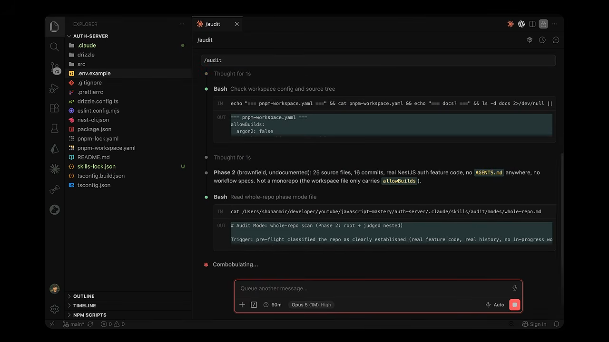
나머지 워크플로가 현실에 맞춰 휘어요
중요한 건 그다음이에요. 프로젝트를 이해하고 나면 나머지 단계가 그 위에 맞춰져요. scope는 프로젝트가 오늘 시작하는 척하지 않아요. 이미 만들어진 것을 먼저 등록하고, 그 현실 위에 다음 조각을 계획해요. 새 기능을 설계할 때도 기존 시스템의 데이터와 패턴을 제약으로 삼아요.

레거시 코드를 훑어보는 도구는 많아요. 여기서 말하는 건 계획하고, 결정하고, 만드는 규율 전체가 남이 짠 코드 위에서 돌아간다는 점이에요. 다시 만들지 않고 재사용하는 게 핵심이에요. 발표자는 물려받은 코드를 깨뜨리지 않고 앞으로 나아가게 하는 일이 개발자 경력의 대부분인데도, 거의 아무도 가르치지 않는다고 말해요.
'다 됐어요'를 믿지 않는 법
기능을 다 만들었고 AI가 끝났다고 해요. 발표자는 여기가 AI가 거짓말하는 마지막 지점이라고 말해요. "다 됐어요, 잘 돌아가요"라고 하지만 버튼이 아무 일도 안 하거나, 엣지 케이스에서 죽거나, 계획한 화면이 아예 만들어지지 않았을 수 있어요.
더 위험한 함정은 테스트가 초록불이라는 점이에요. 초록불은 AI가 테스트하려고 떠올린 코드만 증명해요. 기능이 실제로 있는지, 만들어야 할 화면이 있는지는 증명하지 못해요.

네 가지 일을 일부러 나눠요
그래서 이 워크플로는 '돌아가요'를 답으로 받지 않아요. 확인하는 일을 넷으로 나누고, 서로 섞지 않아요.
| 스킬 | 하는 일 | 왜 따로 두나요 |
|---|---|---|
/check verify | 실제 앱을 돌려 흐름을 클릭하고 엔드포인트를 호출해요. 계획의 기준과 약속한 화면을 하나씩 맞춰 봐요 | '테스트 통과'와 '눈으로 돌아가는 걸 봤다'는 달라요 |
/test | 호출하는 쪽이 실제로 기대는 동작, 깨지면 정말 문제가 되는 부분을 테스트해요 | 6개월 뒤 근처 코드를 바꿀 때 이 기능을 지켜 줘요 |
/check review | 코드를 쓴 모델과 다른 모델이 diff를 읽고 문제를 순위대로 정리해요 | 자기 작업을 리뷰하는 모델은 자기 맹점을 그대로 가져요 |
/document | PR 설명과 변경 기록을 실제 diff로 써요 | AI가 '바꿨다고 기억하는 것'과 실제 변경은 달라요 |
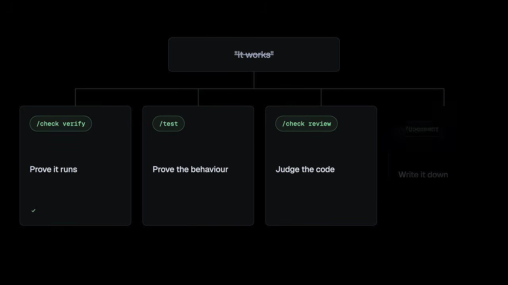
위험에 맞춰 강도를 골라요
스킬 네 개가 많아 보이지만, 얼마나 돌릴지는 프로젝트에 달려 있어요. 버리는 프로토타입은 셀프 체크만 하고, 결제 시스템은 넷 다 돌려요. 그래도 원칙은 같아요. 브라우저에 그려졌다고 끝난 게 아니에요.
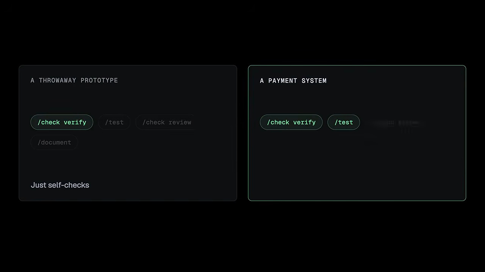
화려하지 않아서 가장 자주 건너뛰는 단계예요. 하지만 방금 넣은 기능이 정말 돌아가는지, 앞서 만든 세 기능을 조용히 깨지 않았는지를 정하는 단계이기도 해요.
debug와 전체 흐름
그래도 언젠가는 무언가 빠져나가요. AI에게 고치라고 하면 헤매기 시작해요. 하나를 바꿔도 그대로, 셋을 더 바꿔도 그대로예요. 20분 뒤에는 무작위 수정 다섯 개, 손도 안 댄 원래 버그, 새 버그 두 개가 남아요. 원인을 찾지 않고 패턴만 맞춰 고치려 한 결과예요. 발표자는 이걸 부패의 가장 순수한 형태라고 불러요.
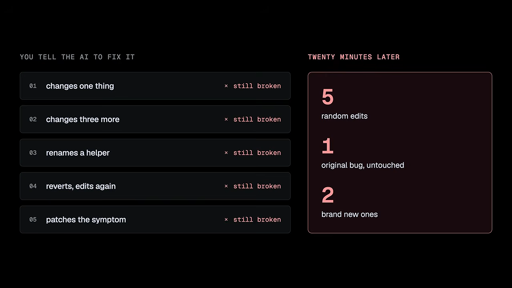
debug — 추측하지 않고 조사해요
debug 스킬은 실제 엔지니어처럼 버그를 다뤄요.
- 먼저 확실히 재현해요. 마음대로 재현할 수 없는 버그는 고쳤다고 증명할 수도 없어요.
- 실패하는 가장 작은 지점으로 좁혀요.
- 근본 원인 가설을 하나만 세우고, 그것만 확인해요. 맞으면 다음으로 가고, 틀리면 그 변경을 버리고 배운 걸 챙겨요. 죽은 수정이 남아 코드를 어지럽히지 않아요.
- 증상이 아니라 원인을 고쳐요. null 값을 덮어서 에러만 없애지 않고, 왜 null이었는지 찾아요.
- 회귀 테스트를 남겨요. 수정 전엔 실패하고 수정 후엔 통과하는 테스트예요. 같은 실수가 다른 곳에도 숨어 있는지 찾아보기도 해요.
성숙한 부분은 마지막이에요. 버그가 코딩 실수가 아니라 잘못된 결정에서 왔다면 그렇다고 말하고, 패치로 덮지 않고 다시 설계하러 돌려보내요. 증상에 반응하는 AI와 원인을 조사하는 AI의 차이가 여기서 나요.
고정된 절차가 아니에요
작은 앱과 거대한 코드베이스, 새 프로젝트와 몇 년 된 프로젝트는 같은 워크플로가 필요하지 않아요. 이 워크플로는 무엇을 만드는지, 얼마나 큰지, 어디로 가는지를 보고 맞춰요. 발표자는 이게 '프롬프트 묶음'과 '엔지니어링 시스템'의 차이라고 말해요.
전체를 한 번에 정리하면
| 원칙 | 맡는 스킬 |
|---|---|
| 제대로 계획해요 | /scope |
| 결정은 의도적으로 내려요 | /architect (빈 결정은 /develop이 막아요) |
| 상태는 파일에 둬요 | /document, /audit, /sync |
| 실제 코드 위에서 일해요 | /audit |
| 실제로 돌아가는 걸 증명해요 | /check verify, /test, /check review |
| 깨지면 규율 있게 고쳐요 | /debug |
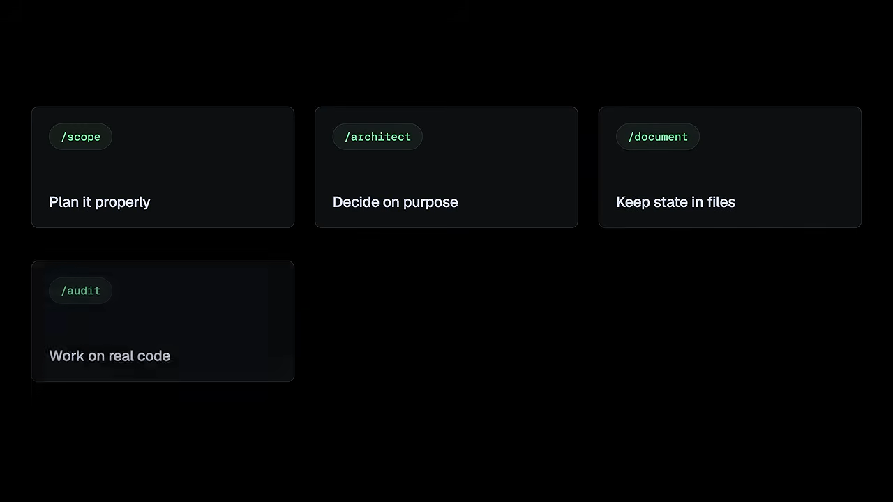
이 스킬들은 모두 오픈소스로 무료 공개돼 있고, 명령 한 줄로 설치해요. 다만 발표자는 일주일만 써 보면 솔직한 한계에 부딪힌다고 말해요. 스킬을 돌리는 건 쉬워요. 언제 무엇을 돌릴지, 선택지가 나왔을 때 뭘 고를지, AI의 추천이 내 상황에 맞는지, 계획이 틀렸을 때 어떻게 할지가 판단이에요. 판단은 저장소에서 설치할 수 없어요.

never ever let the AI decide something important without telling you.
AI가 중요한 걸 당신 모르게 정하게 두지 마세요.
— 영상 22:55
마지막 당부는 도구와 상관없어요. 무엇을 만들지 먼저 정하고, 어려운 결정은 의도적으로 내리고, 상태는 파일에 두고, AI가 중요한 걸 몰래 정하게 두지 않는 거예요. 발표자는 자기 스킬이든 직접 만든 스킬이든, 이것만 지켜도 이미 대부분보다 앞서 있다고 말해요.